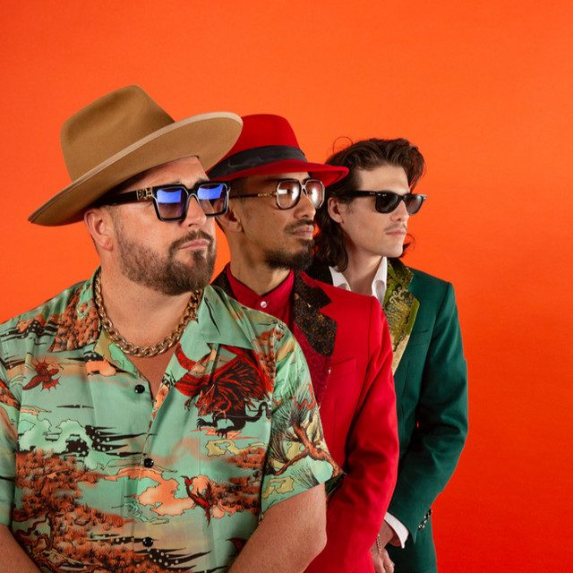

The Cuban Brothers [Audio]: James Brown's favourite breakdancing Latinos


STREAMING AUDIO INTERVIEW
The Cuban Brothers are something of an anomaly in the dance scene. In fact, they’re something of an anomaly on the music scene in general. They’re the most revered (and, err, the only?) “clubbing cabaret” act in the globe, and have breakdanced, rapped and sang their way onto stages at Homelands and Creamfields in the UK, as well as Ibiza, on the national Good Vibrations tour of Australia in 2006, at the MTV Music Awards and NME Awards in Europe, and even in front of Paris Hilton, Richard Branson, and more. The fact that they’ve done it all lathered in fake tan, wearing only speedos and sporting hilarious Latino accents should be commended.
They’re returning to Australia this month to host the first ever Smirnoff Experience down under, performing exclusively at the invite only party on Saturday April 28th. ITM’s Angus Paterson caught up with Miguel Mantovani, the group’s 55 year old front man (an ex-porn star who also hosted his own TV show ‘Good Morning Havana’ in the 80s, apparently!) This interview has to be heard to be believed…
For the full low down on the Smirnoff Experience, check out ITM’s full coverage page HERE.